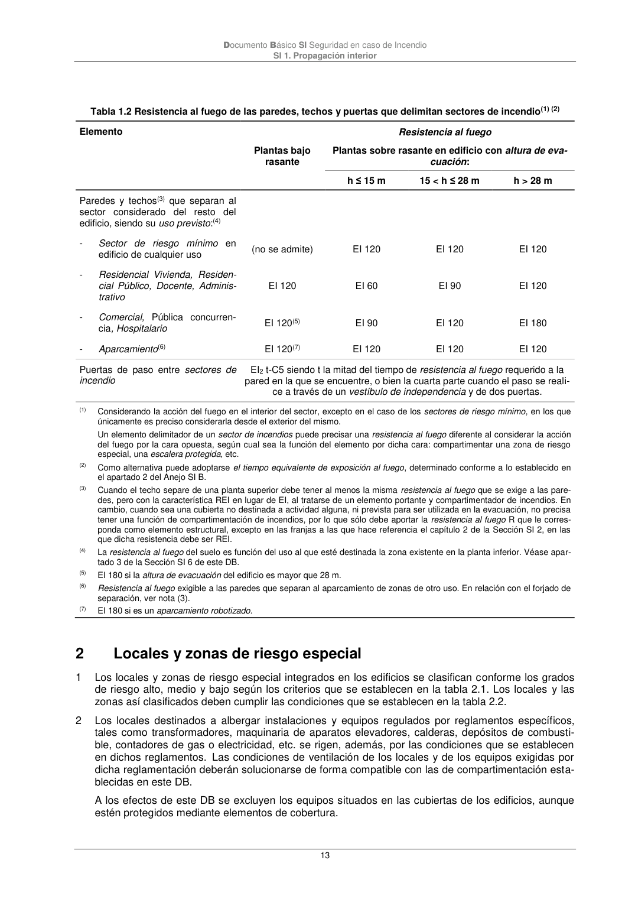

DB-SI Seguridad en caso de incendio · edición 2025-03-04 · capa oficial
Documento DB-SI-oficial · SHA-256 del PDF 0a2e78cd62471d9cc5cfe2efbc6aa39fdbad73c124aea7b039f9de96c141e105
Copia fiel del PDF fuente · Fuente oficial
Ficha de la disposición en la fuente oficial
Formatos: JSON del segmento · Markdown
15 < h ≤ 28 m h > 28 m Paredes y techos(3) que separan al sector considerado del resto del edificio, siendo su usoprevisto:(4) - Sector de riesgo mínimo en edificio de cualquier uso (no se admite) EI 120 EI 120 EI 120 - Residencial Vivienda, Residen- cial Público, Docente, Adminis- trativo EI 120 EI 60 EI 90 EI 120 - Comercial, Pública concurren- cia, Hospitalario EI 120(5) EI 90 EI 120 EI 180 - Aparcamiento(6) EI 120(7) EI 120 EI 120 EI 120 Puertas de paso entre sectores de incendio EI2 t-C5 siendo t la mitad del tiempo de resistencia al fuego requerido a la pared en la que se encuentre, o bien la cuarta parte cuando el paso se reali- ce a través de un vestíbulo de independencia y de dos puertas. (1) Considerando la acción del fuego en el interior del sector, excepto en el caso de los sectores de riesgo mínimo, en los que únicamente es preciso considerarla desde el exterior del mismo. Un elemento delimitador de un sector de incendios puede precisar una resistencia al fuego diferente al considerar la acción del fuego por la cara opuesta, según cual sea la función del elemento por dicha cara: compartimentar una zona de riesgo especial, una escalera protegida, etc. (2) Como alternativa puede adoptarse el tiempo equivalente de exposición al fuego, determinado conforme a lo establecido en el apartado 2 del Anejo SI B. (3) Cuando el techo separe de una planta superior debe tener al menos la misma resistencia al fuego que se exige a las pare- des, pero con la característica REI en lugar de EI, al tratarse de un elemento portante y compartimentador de incendios. En cambio, cuando sea una cubierta no destinada a actividad alguna, ni prevista para ser utilizada en la evacuación, no precisa tener una función de compartimentación de incendios, por lo que sólo debe aportar la resistencia al fuego R que le corres- ponda como elemento estructural, excepto en las franjas a las que hace referencia el capítulo 2 de la Sección SI 2, en las que dicha resistencia debe ser REI. (4) La resistenciaal fuego del suelo es función del uso al que esté destinada la zona existente en la planta inferior. Véase apar- tado 3 de la Sección SI 6 de este DB. (5) EI 180 si la altura de evacuación del edificio es mayor que 28 m. (6) Resistencia al fuego exigible a las paredes que separan al aparcamiento de zonas de otro uso. En relación con el forjado de separación, ver nota (3). (7) EI 180 si es un aparcamiento robotizado. 2
